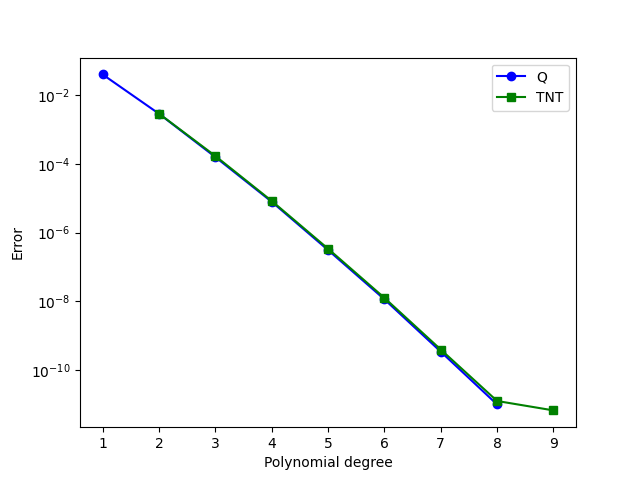
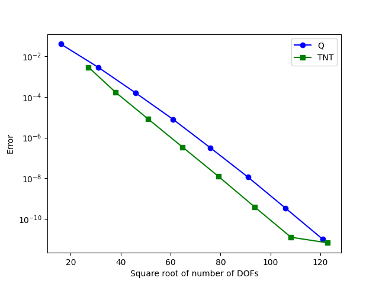

Creating TNT elements using Basix’s custom element interface#
Download sources
Basix provides numerous finite elements, but there are many other
possible elements a user may want to use. This demo
(demo_tnt-elements.py) shows how the Basix custom element
interface can be used to define elements. More detailed information
about the inputs needed to create a custom element can be found in
the Basix
documentation.
We begin this demo by importing the required modules.
from mpi4py import MPI
import matplotlib as mpl
import matplotlib.pylab as plt
import numpy as np
import basix
import basix.ufl
import ufl
from dolfinx import default_real_type, fem, mesh
from dolfinx.fem.petsc import LinearProblem
mpl.use("agg")
Defining a degree 1 TNT element#
We will define tiniest tensor (TNT) elements on a quadrilateral (Commuting diagrams for the TNT elements on cubes (Cockburn, Qiu, 2014)).
The polynomial set#
We begin by defining a basis of the polynomial space spanned by the TNT element, which is defined in terms of the orthogonal Legendre polynomials on the cell. For a degree 1 element, the polynomial set contains \(1\), \(y\), \(y^2\), \(x\), \(xy\), \(xy^2\), \(x^2\), and \(x^2y\), which are the first 8 polynomials in the degree 2 set of polynomials on a quadrilateral. We create an \(8 \times 9\) matrix (number of dofs by number of polynomials in the degree 2 set) with an \(8 \times 8\) identity in the first 8 columns. The order in which polynomials appear in the polynomial sets for each cell can be found in the Basix documentation.
wcoeffs = np.eye(8, 9)
For elements where the coefficients matrix is not an identity, we can
use the properties of orthonormal polynomials to compute wcoeffs.
Let \(\{q_0, q_1,\dots\}\) be the orthonormal polynomials of a given
degree for a given cell, and suppose that we’re trying to represent a
function \(f_i\in\operatorname{span}\{q_1, q_2,\dots\}\) (as
\(\{f_0, f_1,\dots\}\) is a basis of the polynomial space for our element).
Using the properties of orthonormal polynomials, we see that
\(f_i = \sum_j\left(\int_R f_iq_j\,\mathrm{d}\mathbf{x}\right)q_j\),
and so the coefficients are given by
\(a_{ij}=\int_R f_iq_j\,\mathrm{d}\mathbf{x}\).
Hence we could compute wcoeffs as follows:
wcoeffs2 = np.empty((8, 9))
pts, wts = basix.make_quadrature(basix.CellType.quadrilateral, 4)
evals = basix.tabulate_polynomials(
basix.PolynomialType.legendre, basix.CellType.quadrilateral, 2, pts
)
for j, v in enumerate(evals):
wcoeffs2[0, j] = sum(v * wts) # 1
wcoeffs2[1, j] = sum(v * pts[:, 1] * wts) # y
wcoeffs2[2, j] = sum(v * pts[:, 1] ** 2 * wts) # y^2
wcoeffs2[3, j] = sum(v * pts[:, 0] * pts[:, 1] * wts) # xy
wcoeffs2[4, j] = sum(v * pts[:, 0] * pts[:, 1] ** 2 * wts) # xy^2
wcoeffs2[5, j] = sum(v * pts[:, 0] ** 2 * pts[:, 1] * wts) # x^2y
Interpolation operators#
We provide the information that defines the DOFs associated with each sub-entity of the cell. First, we associate a point evaluation with each vertex.
geometry = basix.geometry(basix.CellType.quadrilateral)
topology = basix.topology(basix.CellType.quadrilateral)
x = [[], [], [], []] # type: ignore [var-annotated]
M = [[], [], [], []] # type: ignore [var-annotated]
for v in topology[0]:
x[0].append(np.array(geometry[v]))
M[0].append(np.array([[[[1.0]]]]))
For each edge, we define points and a matrix that represent the integral of the function along that edge. We do this by mapping quadrature points to the edge and putting quadrature points in the matrix.
pts, wts = basix.make_quadrature(basix.CellType.interval, 2)
for e in topology[1]:
v0 = geometry[e[0]]
v1 = geometry[e[1]]
edge_pts = np.array([v0 + p * (v1 - v0) for p in pts])
x[1].append(edge_pts)
mat = np.zeros((1, 1, pts.shape[0], 1))
mat[0, 0, :, 0] = wts
M[1].append(mat)
There are no DOFs associated with the interior of the cell for the lowest order TNT element, so we associate an empty list of points and an empty matrix with the interior.
Creating the Basix element#
We now create the element. Using the Basix UFL interface, we can wrap this element so that it can be used with FFCx/DOLFINx.
tnt_degree1 = basix.ufl.custom_element(
basix.CellType.quadrilateral,
[],
wcoeffs,
x,
M,
0,
basix.MapType.identity,
basix.SobolevSpace.H1,
False,
1,
2,
dtype=default_real_type,
)
Creating higher degree TNT elements#
The following function follows the same method as above to define arbitrary degree TNT elements.
def create_tnt_quad(degree):
"""Create a TNT element of given degree on quadrilaterals."""
assert degree > 1
# Polyset
ndofs = (degree + 1) ** 2 + 4
npoly = (degree + 2) ** 2
wcoeffs = np.zeros((ndofs, npoly))
dof_n = 0
for i in range(degree + 1):
for j in range(degree + 1):
wcoeffs[dof_n, i * (degree + 2) + j] = 1
dof_n += 1
for i, j in [(degree + 1, 1), (degree + 1, 0), (1, degree + 1), (0, degree + 1)]:
wcoeffs[dof_n, i * (degree + 2) + j] = 1
dof_n += 1
# Interpolation
geometry = basix.geometry(basix.CellType.quadrilateral)
topology = basix.topology(basix.CellType.quadrilateral)
x = [[], [], [], []]
M = [[], [], [], []]
# Vertices
for v in topology[0]:
x[0].append(np.array(geometry[v]))
M[0].append(np.array([[[[1.0]]]]))
# Edges
pts, wts = basix.make_quadrature(basix.CellType.interval, 2 * degree)
poly = basix.tabulate_polynomials(
basix.PolynomialType.legendre, basix.CellType.interval, degree - 1, pts
)
edge_ndofs = poly.shape[0]
for e in topology[1]:
v0 = geometry[e[0]]
v1 = geometry[e[1]]
edge_pts = np.array([v0 + p * (v1 - v0) for p in pts])
x[1].append(edge_pts)
mat = np.zeros((edge_ndofs, 1, len(pts), 1))
for i in range(edge_ndofs):
mat[i, 0, :, 0] = wts[:] * poly[i, :]
M[1].append(mat)
# Interior
if degree == 1:
x[2].append(np.zeros([0, 2]))
M[2].append(np.zeros([0, 1, 0, 1]))
else:
pts, wts = basix.make_quadrature(basix.CellType.quadrilateral, 2 * degree - 1)
poly = basix.tabulate_polynomials(
basix.PolynomialType.legendre, basix.CellType.quadrilateral, degree - 2, pts
)
face_ndofs = poly.shape[0]
x[2].append(pts)
mat = np.zeros((face_ndofs, 1, len(pts), 1))
for i in range(face_ndofs):
mat[i, 0, :, 0] = wts[:] * poly[i, :]
M[2].append(mat)
return basix.ufl.custom_element(
basix.CellType.quadrilateral,
[],
wcoeffs,
x,
M,
0,
basix.MapType.identity,
basix.SobolevSpace.H1,
False,
degree,
degree + 1,
dtype=default_real_type,
)
Comparing TNT elements and Q elements#
We now use the code above to compare TNT elements and Q elements on quadrilaterals. The following function takes a DOLFINx function space as input, and solves a Poisson problem and returns the \(L_2\) error of the solution.
def poisson_error(V: fem.FunctionSpace):
"""Compute the L2 error of the Poisson problem solution in V."""
msh = V.mesh
u, v = ufl.TrialFunction(V), ufl.TestFunction(V)
x = ufl.SpatialCoordinate(msh)
u_exact = ufl.sin(10 * x[1]) * ufl.cos(15 * x[0])
f = -ufl.div(ufl.grad(u_exact))
a = ufl.inner(ufl.grad(u), ufl.grad(v)) * ufl.dx
L = ufl.inner(f, v) * ufl.dx
# Create Dirichlet boundary condition
u_bc = fem.Function(V)
u_bc.interpolate(lambda x: np.sin(10 * x[1]) * np.cos(15 * x[0]))
msh.topology.create_connectivity(msh.topology.dim - 1, msh.topology.dim)
bndry_facets = mesh.exterior_facet_indices(msh.topology)
bdofs = fem.locate_dofs_topological(V, msh.topology.dim - 1, bndry_facets)
bc = fem.dirichletbc(u_bc, bdofs)
# Solve
ksp_rtol = 1e2 * np.finfo(default_real_type).eps
problem = LinearProblem(
a,
L,
bcs=[bc],
petsc_options_prefix="demo_tnt_elements_",
petsc_options={"ksp_rtol": ksp_rtol},
)
uh = problem.solve()
converged_reason = problem.solver.getConvergedReason()
num_its = problem.solver.getIterationNumber()
assert converged_reason > 0, (
f"Failed to converge, reason: {converged_reason}, iterations: {num_its}"
)
M = (u_exact - uh) ** 2 * ufl.dx
M = fem.form(M)
error = msh.comm.allreduce(fem.assemble_scalar(M), op=MPI.SUM)
return error**0.5
We create a mesh, then solve the Poisson problem using our TNT elements of degree 1 to 8. We then do the same with Q elements of degree 1 to 9. For the TNT elements, we store a number 1 larger than the degree as this is the highest degree polynomial in the space.
msh = mesh.create_unit_square(MPI.COMM_WORLD, 15, 15, mesh.CellType.quadrilateral)
tnt_ndofs = []
tnt_degrees = []
tnt_errors = []
V = fem.functionspace(msh, tnt_degree1)
tnt_degrees.append(2)
tnt_ndofs.append(V.dofmap.index_map.size_global)
tnt_errors.append(poisson_error(V))
print(f"TNT degree 2 error: {tnt_errors[-1]}")
for degree in range(2, 9):
V = fem.functionspace(msh, create_tnt_quad(degree))
tnt_degrees.append(degree + 1)
tnt_ndofs.append(V.dofmap.index_map.size_global)
tnt_errors.append(poisson_error(V))
print(f"TNT degree {degree} error: {tnt_errors[-1]}")
q_ndofs = []
q_degrees = []
q_errors = []
for degree in range(1, 9):
V = fem.functionspace(msh, ("Q", degree))
q_degrees.append(degree)
q_ndofs.append(V.dofmap.index_map.size_global)
q_errors.append(poisson_error(V))
print(f"Q degree {degree} error: {q_errors[-1]}")
We now plot the data that we have obtained. First we plot the error against the polynomial degree for the two elements. The two elements appear to perform equally well.
if MPI.COMM_WORLD.rank == 0: # Only plot on one rank
plt.plot(q_degrees, q_errors, "bo-")
plt.plot(tnt_degrees, tnt_errors, "gs-")
plt.yscale("log")
plt.xlabel("Polynomial degree")
plt.ylabel("Error")
plt.legend(["Q", "TNT"])
plt.savefig("demo_tnt-elements_degrees_vs_error.png")
plt.clf()

A key advantage of TNT elements is that for a given degree, they span a smaller polynomial space than Q elements. This can be observed in the following diagram, where we plot the error against the square root of the number of DOFs (providing a measure of cell size in 2D)
if MPI.COMM_WORLD.rank == 0: # Only plot on one rank
plt.plot(np.sqrt(q_ndofs), q_errors, "bo-")
plt.plot(np.sqrt(tnt_ndofs), tnt_errors, "gs-")
plt.yscale("log")
plt.xlabel("Square root of number of DOFs")
plt.ylabel("Error")
plt.legend(["Q", "TNT"])
plt.savefig("demo_tnt-elements_ndofs_vs_error.png")
plt.clf()
